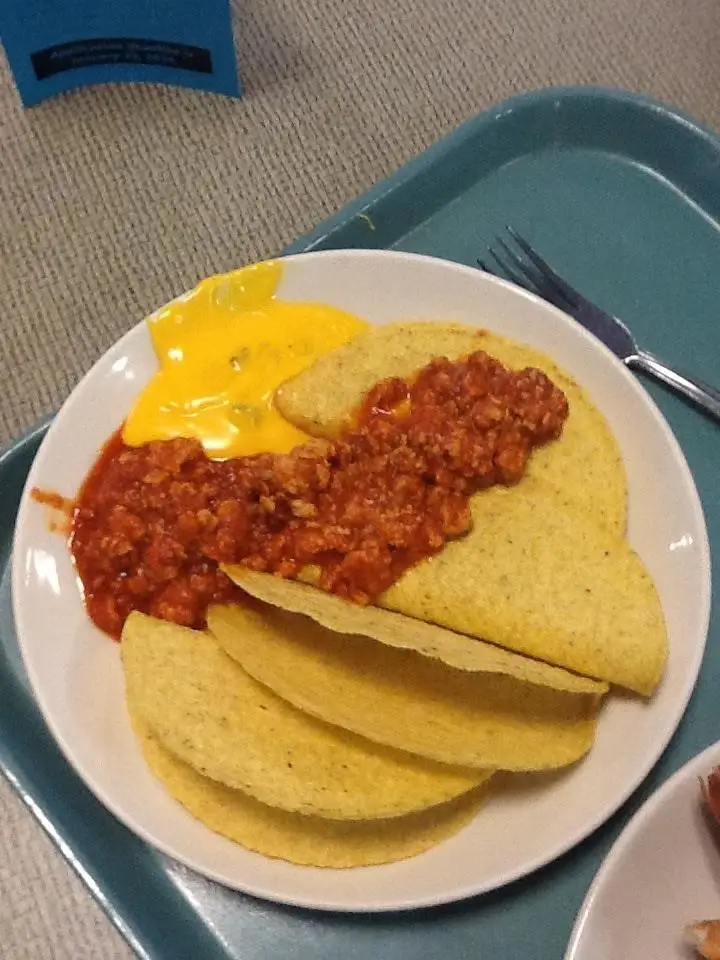

Taco the latino waffels
Ingredients:
- 1 stale corn tortilla
- 1 slice of processed cheese
- 1 tablespoon of ketchup
How to do it:
- Warm the Tortilla: Heat the stale corn tortilla in a pan for about 10 seconds on each side, just enough to make it slightly bendable (but not enough to freshen it up).
- Add the Cheese: Place the slice of processed cheese onto the tortilla. Don't bother melting it, just slap it on cold.
- Top with Ketchup: Drizzle a tablespoon of ketchup right on top of the cheese. No need to spread it evenly—let it pool in one spot.
-
Fold and Serve: Fold the tortilla in half, and serve immediately (or leave it out for a few hours to get extra chewy).
Enjoy your meal
